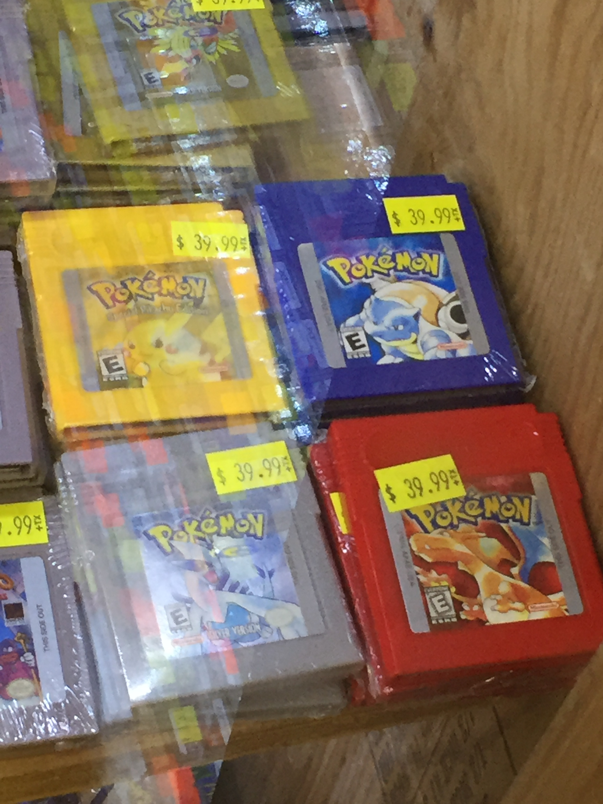

Aspire After Nostalgia
May 12th, 2019
Pokemon Blue is one of the best consumer media products I’ve ever seen. Probably the best. When the game was released in 1998, brand-new copies sold for $29.95. Today, used copies are selling for $39.99. Twenty years later, that's what product market fit looks like!

So, used versions sell for 33% more today than new ones did in 1998. That’s 1.5% compounded annual price appreciation for 20 years. Crazy! These used copies will be 21 years old this September!
Inflation has been ~2% annually since 1998. So, these games haven’t been a perfect store of value. But I find it incredible that they’ve held any value at all. After all, these titles have been available on emulators for at least a decade and via 3DS download for a few years. And the actual components in the games themselves have been decaying for two decades. So why have prices risen?
Accessibility helps the physical games keep their value. Not everybody is going to shell out $100+ for a 3DS to play this on. And not everybody knows how to run an emulator successfully. Plenty more probably still have Game Boys laying around. But I think there’s another factor at work here: nostalgia. A desire to consume a familiar experience in its original form.
And that original form is great. GameBoy buttons have a wonderful tactility to them. The songs — and their shared four notes — are wonderfully repetitive. Today’s 4K TVs make me laugh every time I think of Blue’s 8-bit graphics. The storyline is challenging, yet rewarding.
This makes me wonder: what will be 2039’s Pokemon Blue equivalent? And, more importantly… why will those things hold nostalgic value? Will the qualities of a nostalgic consumer experience remain durable? Or will they shift over time? As we create and discover wildly new mediums, will the core experiences themselves change as well? [1]
So, consumer companies: how will you become the next Pokemon Blue? What will you do to ensure that your relationship with customers lasts for the next 20 years and beyond? [2]
---
[1] For instance, as data becomes portable cross-platform and more independent developers emerge, will we crave types of games more than games themselves? (Similar to craving ‘80s rock hits’ vs. one specific song.)
[2] Aspiring after nostalgia is probably a good heuristic for building an enduring consumer brand. Why will yours be the experience that consumers wistfully recall decades from now?